Within the past 4 weeks, we've focused on trying to fill our websites with very basic content. We've tried to gather materials and plan out
what our websites will look like. You will see my very first wireframe ideas in week 2 of my blog posts (my
apologies - it looked terrible), and how it's changed over the course of the past few weeks. You will also find the user flow and information
structure of this website in my week 4 blog post.
I want my website to flow, be easy for the user to read and navigate around, and visually aesthetic. I've made these wireframes below to show
you some idea about how I want the website pages to look on a desktop and on a phone.
Website view on desktop screen size:
I've annotated the images in blue to show you what my plan of action is regarding how I want the website to look at a very basic level.
So far, I have executed most of this wireframe to date (17/03/2024) and will adjust it more as the semester continues. I will also show you
any new ideas that come to mind and if they influence any changes to the design of my website.
Website view on phone screen size:
Just like the desktop view of the website, the phone view will be similar but just scaled down to size with everything in proportion. The
phone view will also allow the users to scroll up or down to access information that would usually be spread over one desktop screen.
Brainstorming Styles:
I was looking at colours I would like to incorporate into my website and, through the annotaions, you can see that I would like the background
colour of the website to be black and have accent colours themed to each page and their content. I've included color swatches that I think would
look nice against a black background, and a sample design of what I want as background design. The background design will most likey be used
throughout the website and be a "general theme" for the whole portfolio website. In the corner, I have a possible logo idea that I want to include
in my URL and throughout the web pages. In terms of fonts, I looked at a range of fonts that I thought would be suitable for general text
throughout my website or possibly be used as headings. If anything changes and there are more updates on the website, I will be sure to show them
here.
Style process:
So… you’ve noticed that my website is called the ‘Mikisha-verse’, right?
One thing to know about me is that my creative outlook on things kind of runs free, and most of it generates in my head until I have to do very
specific things, and thus go searching for references and inspiration. For instance, taking the name of my website into consideration, I thought
it would be perfect to have a universe theme to my website where each main page would be represented by a galaxy and when you enter each page,
each section within it would be represented by a planet or portals. My ideas were to use something similar to the images below for the universe theme.
Being a someone who pays A LOT of attenion to detail, while coding in javascript I realised how much time it would take to execute because I want to
use my own images and animations. Of course, I haven’t learnt how to animate anything yet.. so I scrapped my idea and went for a more simple
approach that is more aligned to my first few ideas on styling above.
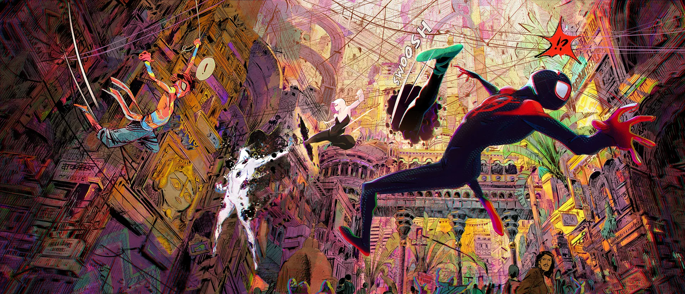
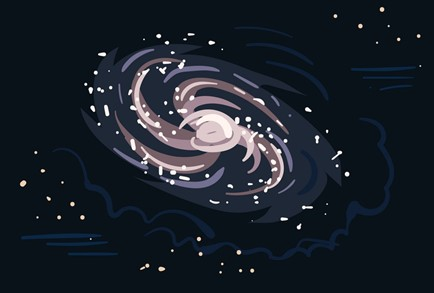
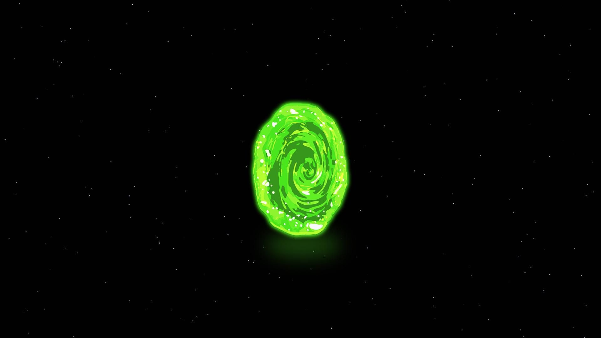
In terms of my visual aesthetic, I really want my website to flow and be interactive. I want the user to be wowed by the UX and UI in my website.
I had a look at this portfolio websites below, by Justine Soulie and I was immediately blown away. I love how the cursor interacts with the images on
the main page and how it makes the user feel, this is something I want to do on my website and incite a similar feeling for the user. It sort of fast
tracked my ideas on how to make this website feel more like me, while capturing my artistic flair. - this will be shown in the style guide below.
Style Guide:
Simply put; I want my website to be simple but stunning, interactive but peaceful, and a true reflection of me and my personality.
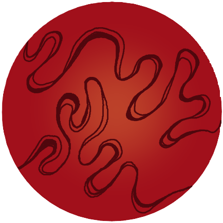
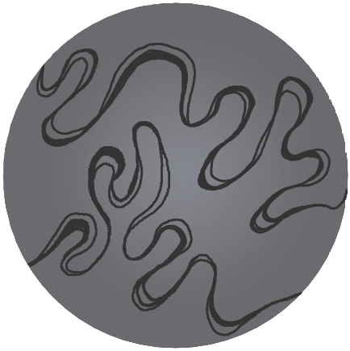
These are a few of my designs for the final website, which is based around the ideas mentioned in brainstorming styles above and you’ll
see that I am already using them on the website. I will have them in a range of colours and have them placed appropriately to each page
with their designated themes, fonts and colours. I know there's not a lot here, but I am working on finalising more designs. Overall,
I want users to be as amazed with the general look and feel of the website, as they are with the content.
The second iteration of wireframes and their annotations for the final design are below. I want my site to look something like this with
a lot of animations and events done through javascript – this is what will make the website interactive and achieve the type of user
experience I want my audience to have.
Style of website viewed on a desktop screen:
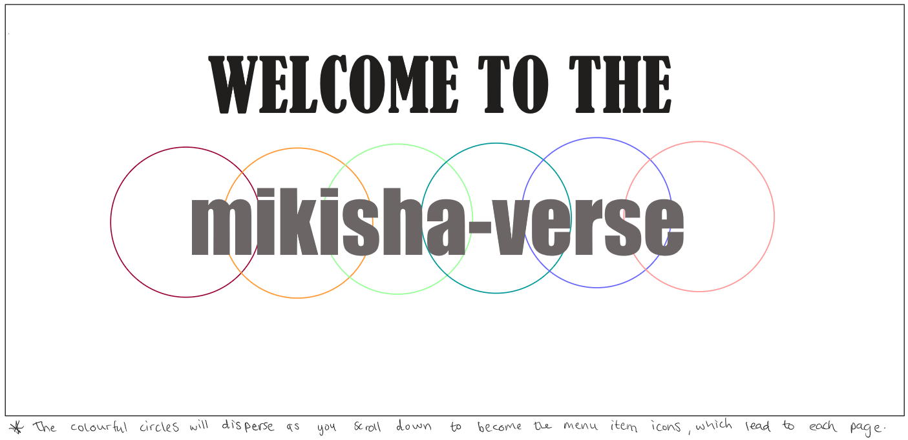
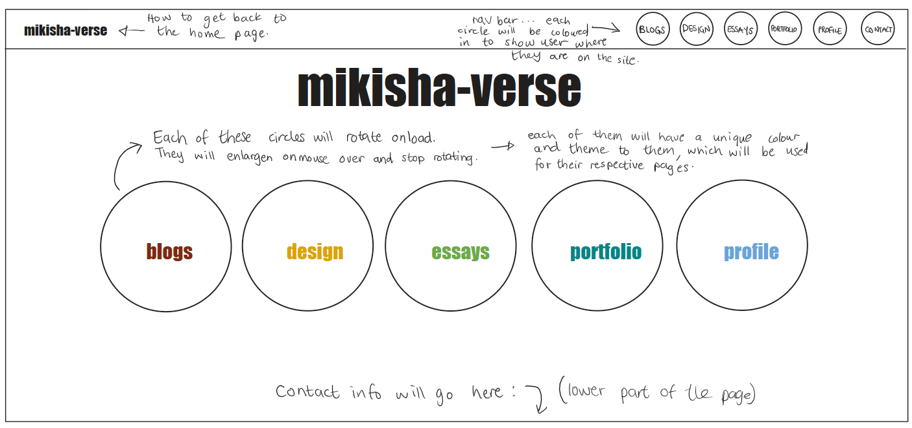
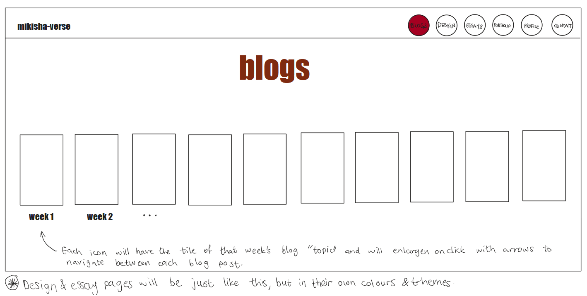
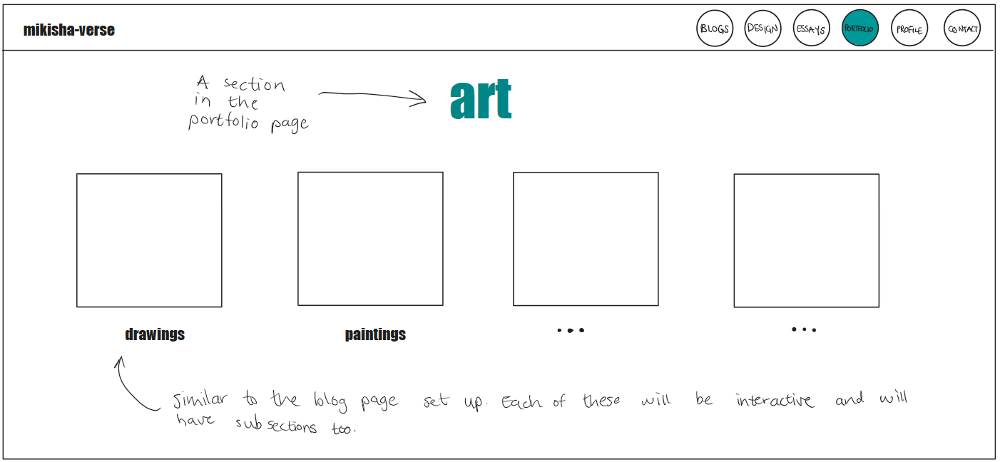
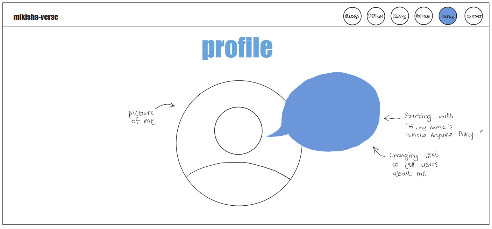
As you can see, from my very first wireframes a lot has changed. I kept quite a few of my initial ideas but bettered them to suit a
certain style and theme. I would like my website to look a lot like these wireframes, or at least a version of them. So far, its going
okay and I am able to execute some of these aspects.
The view of the website on an iPad screen will be just like the view on a desktop or pc screen, but scaled to fit the dimensions of the
iPad's screen.'
Style of website viewed on a mobile screen:
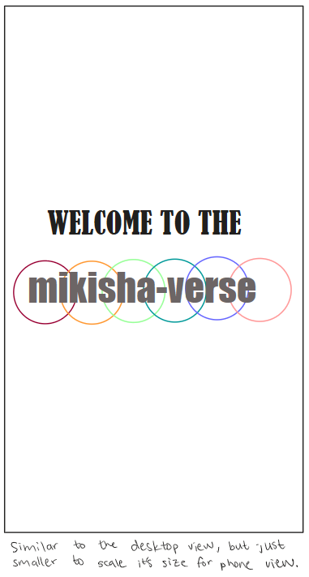
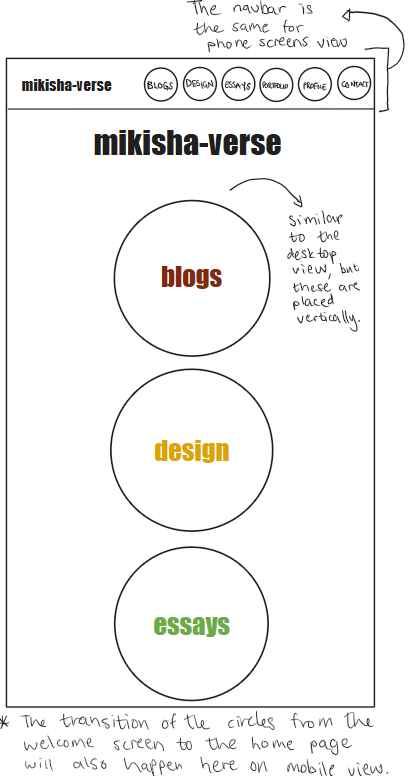
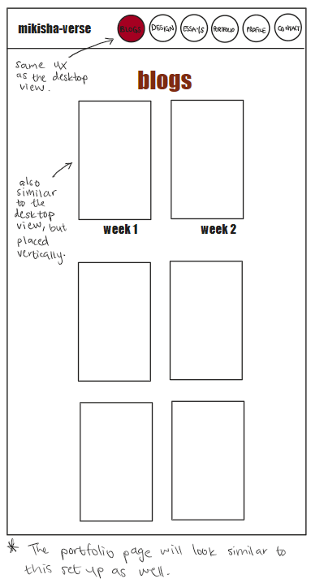
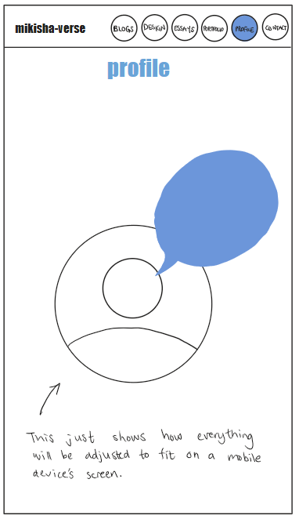
These are the phone sized screen views of the website. The screens will (hopefully) adjust according to the relative screen size and have
all animations working in accordance too.